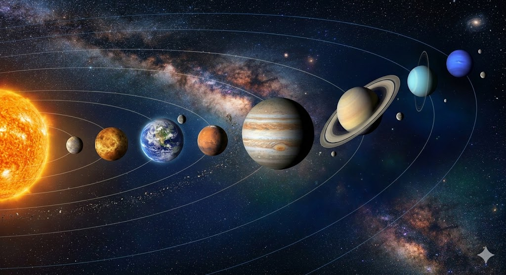

Who Is Your Guardian Planet?
Since ancient times, humanity has looked to the stars for guidance. In astrology and cosmic philosophy, each person is connected to a specific celestial body that acts as their silent protector.
🚀 Fascinating Facts About the Solar System
1. Mercury
The Shrinking Planet: Mercury is slowly shrinking! As its iron core cools, its surface wrinkles like a raisin.
Extreme Temperatures: Swings from 430°C by day to -180°C at night.
2. Venus
The Backward Spinner: Rotates clockwise (east to west). This is called retrograde rotation.
A Long Day: A day on Venus is longer than its entire year!
3. Earth
The Goldilocks Zone: Earth is the only planet known to have liquid water on its surface.
A Protective Shield: Our magnetic field protects us from solar radiation.
4. Mars
The Home of Giants: Mars hosts Olympus Mons, a volcano 3x taller than Mount Everest!
Blue Sunsets: Dust in the atmosphere makes sunsets appear blue.
5. Jupiter
The Vacuum Cleaner: Its massive gravity acts like a shield, protecting Earth from asteroids.
The Great Red Spot: A storm bigger than Earth itself, raging for 150+ years.
6. Saturn
The Floater: It is less dense than water. In a giant bathtub, Saturn would actually float!
Extreme Rings: Made of billions of chunks of ice and rock.
7. Uranus
The Tilted Planet: Uranus is the only planet that rotates on its side like a rolling ball.
Ice Giant: The coldest planet in the solar system, reaching -224°C.
8. Neptune
Supersonic Winds: Winds reach 2,000 km/h—faster than the speed of sound!
Methane Blue: Its deep blue color comes from methane absorbing red light.